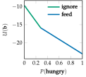

Crying Baby
Problem
The crying baby problem is a simple POMDP with two states, three actions, and two observations. Our goal is to care for a baby, and we do so by choosing at each time step whether to feed the baby, sing to the baby, or ignore the baby.
The baby becomes hungry over time. We do not directly observe whether the baby is hungry, but instead receive a noisy observation in the form of whether or not the baby is crying.
State, Action and Observation Space
The state space, action space and observation space are
\[\begin{aligned} \mathcal{S} = \{\text{hungry}, \text{sated}\} \\ \mathcal{A} = \{\text{feed}, \text{sing}, \text{ignore}\} \\ \mathcal{O} = \{\text{crying}, \text{quiet}\} \end{aligned}\]
Transitions
Feeding will always sate the baby. Ignoring the baby risks a sated baby becoming hungry, and ensures that a hungry baby remains hungry. Singing to the baby is an information gathering action with the same transition dynamics as ignoring, but without the potential for crying when sated (not hungry) and with an increased chance of crying when hungry.
The transition dynamics are:
\[\begin{aligned} T(\text{sated} \mid \text{hungry}, \text{feed}) &= 100\% \\ T(\text{hungry} \mid \text{hungry}, \text{sing}) &= 100\% \\ T(\text{hungry} \mid \text{hungry}, \text{ignore}) &= 100\% \\ T(\text{sated} \mid \text{sated}, \text{feed}) &= 100\% \\ T(\text{hungry} \mid \text{sated}, \text{sing}) &= 10\% \\ T(\text{hungry} \mid \text{sated}, \text{ignore}) &= 10\% \end{aligned}\]
Observations
The observation dynamics are:
\[\begin{aligned} O(\text{cry} \mid \text{feed}, \text{hungry}) &= 80\% \\ O(\text{cry} \mid \text{sing}, \text{hungry}) &= 90\% \\ O(\text{cry} \mid \text{ignore}, \text{hungry}) &= 80\% \\ O(\text{cry} \mid \text{feed}, \text{sated}) &= 10\% \\ O(\text{cry} \mid \text{sing}, \text{sated}) &= 0\% \\ O(\text{cry} \mid \text{ignore}, \text{sated}) &= 10\% \end{aligned}\]
Reward Function
The reward function assigns $−10$ reward if the baby is hungry independent of the action taken. The effort of feeding the baby adds a further $−5$ reward, whereas singing adds $−0.5$ reward.
Optimal Infinite Horizon Policy
As baby caregivers, we seek the optimal infinite horizon policy with discount factor $\gamma = 0.9$. This optimal policy is:

Note that this infinite horizon solution does not recommend singing for any belief state. However, it is optimal to sing in some finite horizon versions of this problem